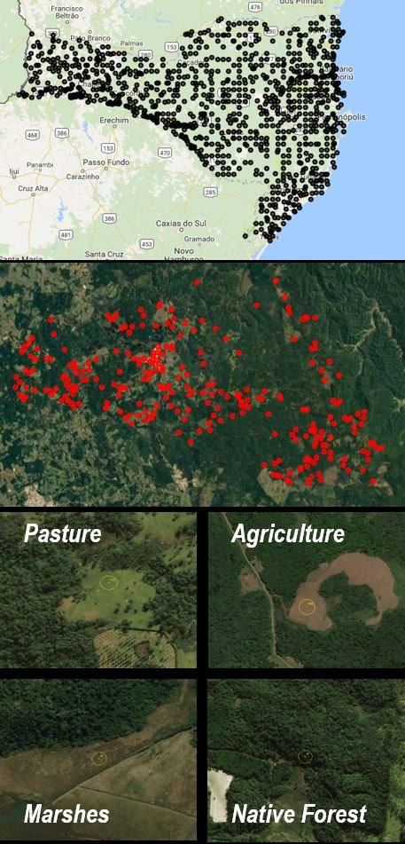
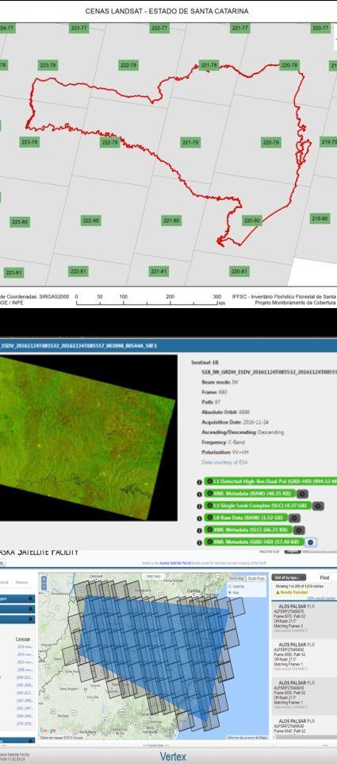
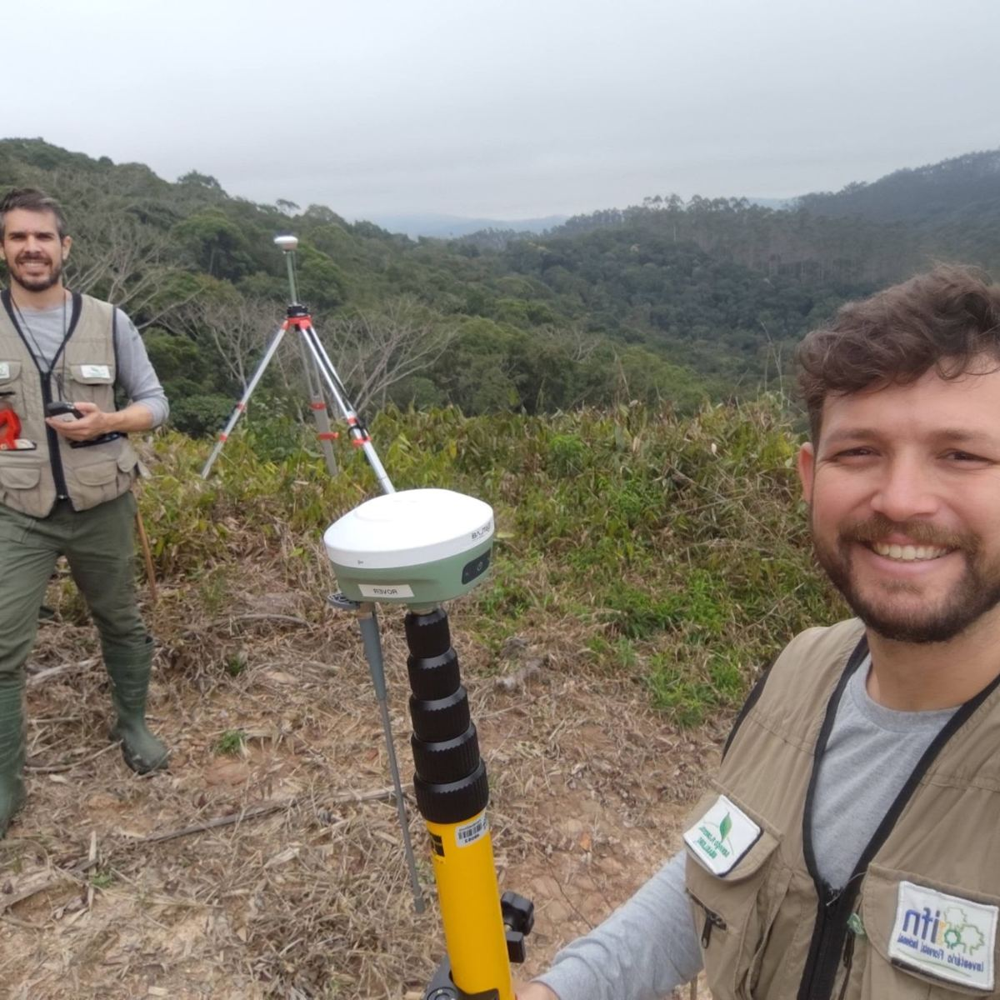
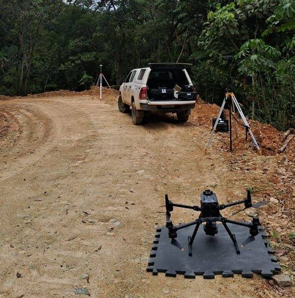
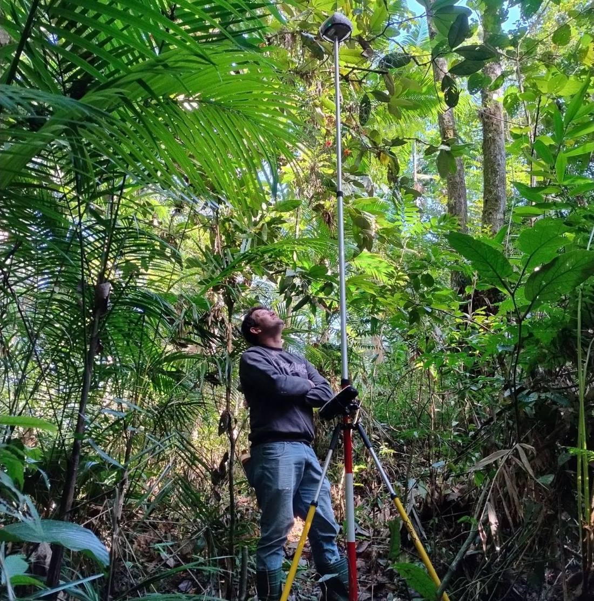

Mapeamento
Instituição Responsável:
Universidade Regional de Blumenau (FURB)
Coordenador:
Prof. Dr. Alexander Christian Vibrans
Objetivo:
Monitorar a extensão das florestas nativas catarinenses, bem como dos demais usos da terra por meio de técnicas de Sensoriamento Remoto, a fim de identificar dinâmicas e desenvolver produtos e serviços úteis para fins de gestão.
O Mapeamento é uma das ações do FlorestaSC e busca complementar as informações obtidas em campo por meio de produtos gerados com base em dados obtidos por sensoriamento remoto (SR). Os dados de SR utilizados são provenientes de diversos sensores montados em satélites orbitais, os quais fornecem continuamente imagens da superfície terrestre, permitindo, por exemplo, observar mudanças na cobertura florestal, em áreas agrícolas e pastoris ou monitorar o processo de urbanização ao longo do tempo.
Os produtos gerados serão utilizadas no planejamento territorial e fiscalização/licenciamento ambiental em âmbito local (municipal), regional e estadual. Desta forma, ações de órgãos públicos envolvidos nessas atividades serão subsidiadas pelos produtos gerados pelo mapeamento.
Nota: Esta atividade de mapeamento era anteriormente atribuída ao subprojeto MonitoraSC que integrava o projeto Inventário Florísitico Florestal de Santa Catarina. Após o processo de reformulação da identidade do projeto, o trabalho de mapeamento passou a ser definido com uma ação do projeto atualmente denominado FlorestaSC.
Os objetivos específicos da atividade de Mapeamento são:
- Fortalecer sinergias entre o Inventário Florestal e o Mapeamento, integrando observações de campo com dados de SR;
- Definir metodologias padronizadas para reconhecimento e quantificação de alterações na cobertura florestal, permitindo fluxos constantes de trabalho;
- Quantificar os recursos florestais através da produção de mapeamentos baseados em modelagem estatística;
- Fornecer continuamente a órgãos competentes mapas temáticos atualizados da cobertura e uso da terra;
- Aperfeiçoar processos metodológicos para melhor compreender as interações entre as mudanças da vegetação e os dados captados pelos sensores remotos.
Por que nosso trabalho é necessário uma vez que já existem mapeamentos das florestas disponíveis?
Os gestores e tomadores de decisão precisam de informações atualizadas e confiáveis para auxiliar no desenvolvimento de estratégias para o planejamento territorial e o licenciamento e controle ambiental. Assim, buscamos compreender as limitações dos novos mapeamentos apresentando a qualidade dos produtos e aprimorando as informações de cobertura e uso da terra disponíveis.
A obtenção das informações de cobertura e uso da terra somente é possível quando as equipes do processamento dos dados terrestres e da análise dos dados de sensoriamento interagem e trabalham em conjunto. Exatamente esta é a proposta de trabalho de Mapeamento dentro do FlorestaSC.
O nosso mapeamento é inovador...
...uma vez que não existem mapeamentos similares que possuem:
1) Legenda inédita de múltiplos usos da terra (com 12 classes temáticas);
2) Vasta abrangência espacial;
3) Escala e um detalhamento para aplicação municipal;
4) Metodologia consistente, transparente e de código inteiramente documentado e aberto.

FIQUE POR DENTRO
Para saber mais sobre nosso trabalho de Mapeamento, acesse também:
Metodologia
Mapas
Mapas disponíveis:
➤ Download dos shapefiles: Solicite pelo email florestasc@furb.br ou cadastre-se em nossa Plataforma de Mapas
Mapa de Cobertura Florestal e Uso da Terra de Santa Catarina (MonitoraSC, 2020)

Consulte o mapa online e conheça a metodologia
➤ Download do shapefile/raster: via cadastro na Plataforma de Mapas ou solicitando pelo florestasc@furb.br
Acesse o artigo: MonitoraSC: um novo mapa de cobertura florestal e uso da terra do estado de Santa Catarina
Como citar?
Vibrans, A.C.; Nicoletti, A.L.; Liesenberg, V. et al. MonitoraSC: um novo mapa de cobertura florestal e uso da terra do estado de Santa Catarina. Agropecuária Catarinense, v. 34, p. 42-48, 2021.
Mapa de Áreas potenciais e remanescentes de Restinga de Santa Catarina

➤ Download do shapefile: via cadastro na Plataforma de Mapas ou solicitando pelo florestasc@furb.br
Acesse o artigo: Mapeamento das Áreas Potenciais (originais) e Remanescentes de Restinga: uma proposta metodológica para Santa Catarina, Brasil
Nicoletti, A.N.; Vibrans, A.C.; Andrade, M.Y.; da Veiga, J.L.; Bizon, A.R.; da Silva, M.S.; Lingner, D.V.; Farias, T.L. Mapeamento das Áreas Potenciais (originais) e Remanescentes de Restinga: uma proposta metodológica para Santa Catarina, Brasil Revista Brasileira de Geografia Física, v. 17, n. 1, p. 260-280, 2024.
Mapas das Espécies Ameaçadas de Extinção de Santa Catarina

Mapa de Áreas Prioritárias para conservação das famílias chave da Mata Atlântica
Mais informações no artigo de Oliveira et al. (2021)
Oliveira, L.Z.; Gasper, A.L.; Vibrans, A.C. Potential new areas for conservation of key botanical families in the subtropical Atlantic Forest. Biodiverisity and Conservation, v. 30, p. 3903-3917, 2021.
Esta parte da página usa um recurso interativo do Google Sites que não pôde ser copiado. Ver no site atual ↗
Áreas prioritárias para conservação das famílias chave da Mata Atlântica - Fabaceae/Myrtaceae/Lauraceae, conforme estudo de Oliveira et al. (2021)
Resumo: As famílias botânicas Myrtaceae (guamirins), Lauraceae (canelas) e Fabaceae (leguminosas) são elementos florísticos essenciais da Mata Atlântica devido suas notáveis riquezas de espécies, níveis de endemismo e funções ecológicas. Diante disso, dados coletados pelo FlorestaSC foram analisados com o intuito de verificar se existem áreas com potencial para conservação com grande riqueza de espécies arbóreas/arbustivas dessas famílias. A estatística univariada local de Moran foi empregada considerando a riqueza de espécies dessas famílias por unidade amostral (UA). Seis agrupamentos de UAs foram encontrados na Floresta Ombrófila Densa (FOD) e na Floresta Ombrófila Mista (FOM); a maioria deles abriga mais da metade de todas as espécies dessas famílias observadas pelo FlorestaSC, além de muitas outras pertencentes a outras famílias. Um agrupamento de Myrtaceae e um agrupamento de Lauraceae na FOD foram os únicos que se sobrepuseram a Unidades de Conservação (UCs). Os agrupamentos de Lauraceae na FOM, localizados em zonas de ecótono com a FOD, apresentaram ∼50% de cobertura florestal nativa, enquanto os agrupamentos de Myrtaceae e Fabaceae apresentaram ∼10% de cobertura florestal.
Mapa de Localização das Unidades Amostrais do FlorestaSC

Clique aqui para acesso ao mapa detalhado da localização das Unidades Amostrais
Informações sobre cada Unidade Amostral podem ser consultadas aqui.
Mapas em formato shapefile
Na Plataforma de Mapas do FlorestaSC (https://monitora.furb.br/) são encontradas mais de 20 camadas (layers) do estado de Santa Catarina, em formato shapefile.
É possível realizar o download de grande parte destas camadas, mediante cadastro. Saiba como realizar o cadastro na plataforma de mapas por meio deste passo-a-passo.
Os shapefiles também podem ser solicitados através do email florestasc@furb.br.

Dentre as camadas disponíveis na plataforma, algumas foram produzidos pelo FlorestaSC:
- Mapa de Cobertura Florestal e Uso da Terra de Santa Catarina (shapefile e raster)
- Mapa de Áreas potenciais e remanescentes de Restinga de Santa Catarina (shapefile)
Na plataforma são fornecidas também camadas produzidas por outros órgãos como: Municípios (Seplan, 2013), Bacias Hidrográficas (SDM), Regiões Fitoecológicas (Klein, 1978), dentre outras.
Veja a lista completa de camadas na Plataforma de Mapas.
Mapas em formato .jpg
Clique aqui para consultar maiores informações sobre os mapas abaixo.
Mapeamento 2017–2020
Leia aqui a metodologia dos mapeamentos realizados entre 2017 e 2020:
➤ Download dos shapefiles: Solicite pelo email florestasc@furb.br ou cadastre-se em nossa Plataforma de Mapas
Metodologia do Mapeamento da Cobertura Florestal e Uso da Terra
Base de Dados
O projeto utilizou imagens de satélite Landsat-8 OLI (2017), modelos digitais de elevação (da SDS e da NASA – SRTM), o levantamento aerofotogramétrico de Santa Catarina (Santa Catarina, 2012), entre outros produtos. As imagens de satélite foram extraídas do USGS (https://earthexplorer.usgs.gov/), em tipo nível 2 (Level 2) com correções geométricas, radiométricas e atmosféricas da reflectância da superfície.
Dados auxiliares referentes à topografia (altitude, declividade e exposição à radiação) e ao clima na área de estudo (principalmente precipitação e temperatura) foram utilizados para melhorar a classificação dos diversos tipos de cobertura e uso da terra.
Os dados obtidos nas medições de campo do FlorestaSC compõem um valioso banco de informações sobre os recursos florestais e suas configurações espaciais. Esses dados foram utilizados na obtenção de informações de referência consistentes (“verdade de terreno”) para o treinamento e validação dos algoritmos de classificação automatizado das imagens de satélite.

Procedimentos
Os procedimentos metodológicos adotados estão apoiados em três principais categorias de produtos: produtos de SR, produtos auxiliares e informações de campo.
O conjunto de procedimentos, ilustrados no fluxograma abaixo, foi executado de forma independente nas 42 subdivisões (folhas) do território catarinense, visando contemplar idiossincrasias locais e regionais.

As imagens de satélite foram classificadas por meio do algoritmo Random Forest, resultando em um mapa composto por 12 classes temáticas, com área mínima mapeada de 0,5 hectares e acurácia global de 95%.
FLUXOGRAMA


Metodologia do Mapeamento da Restinga
Foram realizados dois mapeamentos de restinga:
1) Áreas potenciais de restinga – áreas potencialmente (ou originalmente) ocupadas por diferentes formações de restinga;
2) Áreas remanescentes de restinga – áreas remanescentes atuais de restinga, inseridas em áreas potenciais.
Áreas potenciais de restinga
Áreas potenciais foram estabelecidas através do cruzamento entre cinco atributos: altimetria (NASA – SRTM v.3), modelo de acumulação (IBGE, 2004, 2009), classificação do solo (EMBRAPA, 2004), relevo (CPRM, 2016) e subdomínio hidrogeológico (CPRM, 2007). Essas áreas foram classificadas em três níveis de probabilidade de ocorrência de restinga: muita alta, alta e de transição. A classificação se deu a partir do reconhecimento das características mais prováveis de cada atributo em áreas de restinga e da informação contida em cada polígono oriundo da intersecção entre os cinco atributos.
Áreas remanescentes de restinga
Os remanescentes da restinga foram mapeados através dos mesmos procedimentos aplicados às demais classes de uso da terra, conforme o fluxograma acima. O algoritmo Random Forest foi treinado e posteriormente validado com amostras de verdade de terreno das diversas subformações da restinga identificadas em imagens de alta resolução espacial (Santa Catarina, 2012; plataforma Google Earth), bem como em fotografias in loco do acervo do FlorestaSC e da ferramenta Google Street View. Nesse mapeamento, uma única classe temática denominada “Restinga” foi mapeada.

Uso do drone
A utilização de drones confere agilidade e escalabilidade na integração de dados de inventário florestal e sensoriamento remoto. O FlorestaSC usa drones com sensores multiespectral e LiDAR para complementar os dados de campo e viabilizar análises mais abrangentes e precisas da estrutura da vegetação.
Área de Estudo
Os voos com drone são realizados sobre as Unidades Amostrais (UAs) do FlorestaSC, onde também são executadas as atividades de Inventário Florestal. Entre junho e dezembro de 2024, foram realizados voos sobre 40 UAs, sendo 20 situadas na Floresta Ombrófila Mista (FOM) e 20 na Floresta Ombrófila Densa (FOD). As UAs da FOM estão concentradas na região do Planalto Norte e as da FOD entre o Litoral Norte e a Grande Florianópolis.

Equipamentos
Os voos foram feitos por um drone DJI Matrice 350 RTK, acompanhado dos equipamentos a seguir:
- uma câmera multiespectral: produz ortomosaicos de imagens com resolução espacial média de 4 cm em cinco bandas (RGB, borda do vermelho e infravermelho próximo);
- um sensor LiDAR (laser): produz uma nuvem densa de pontos 3D (três dimensões) com discretização de cinco retornos;
- um receptor GNSS diferencial RTK: corrige a trajetória de voo em tempo real, com uma acurácia posicional de até 10 cm;
- um receptor GNSS diferencial SatLab FR-20: coleta acuradamente as coordenadas do início e fim de cada subunidade que compõe uma UA.
Coletas de Dados
Antes de realizar a coleta de dados em campo são feitos, para cada UA, dois planos de voo do drone, um para cada sensor (LiDAR e Multiespectral). No plano de voo, são configurados parâmetros como velocidade de deslocamento e altura de voo. A qualidade dos dados depende desses parâmetros, além dos ajustados em tempo real pelos equipamentos durante o voo, como o ISO, que determina a claridade da foto, e o Shutter, que evita borrões devido à movimentação do drone.

Drone para aquisição de imagens nas UAs do FlorestaSC
Ao localizar a UA em campo, duas atividades são realizadas: voos com drone e coleta das coordenadas iniciais e finais de cada subunidade da UA. A coleta de dados é realizada em condições de tempo favoráveis - sem chuva e neblina.
Antes de realizar o voo com drone, é feita a montagem do receptor RTK, em local aberto. O voo do drone é então executado, ao mesmo tempo que a trajetória do voo é corrigida em tempo real pelo receptor RTK. O voo é monitorado através do controle remoto do drone.
Dois voos por UA são realizados:
(A) com um sensor multiespectral, para registrar múltiplas imagens aéreas;
(B) com um sensor LiDAR (laser), para obter nuvens de pontos 3D por meio de emissão de feixes de luz.

Linha de voo (multiespectral). Cada drone indica a posição onde é obtida uma imagem. Linhas cinzas representam a área do terreno abrangida por cada imagem.

O sensor LiDAR emite feixes de luz que, ao incidirem sobre um objeto (ex.: folha, galho, tronco ou solo da floresta), registra um sinal de retorno de cada objeto.
Após o voo, adentra-se no remanescente florestal onde a UA está situada, para coletar as coordenadas do início e fim de cada subunidade da UA (20 x 50 metros; veja a configuração da Unidade Amostral). O início e o fim da subunidade são materializados com hastes metálicas enterradas durante o inventário florestal, as quais são encontradas com a ajuda de um detector de metais. A aquisição das coordenadas depende de dois receptores. Utiliza-se o receptor RTK (“base”), que é instalado fora da floresta para rastrear sinais de satélites e transmitir correções para o outro receptor (rover), que é utilizado dentro da floresta. O rover é acoplado a um bastão telescópico de 8 m para alcançar uma maior altura, permitindo amplificar e melhorar a comunicação com os satélites.

Localização da haste metálica implantada no inventário florestal (no início e fim de cada subunidade da UA), para coleta de coordenadas com GPS de precisão.

Equipe de operação do drone

Montagem do RTK e drone, em campo

Instalação do receptor (rover) dentro da floresta, acoplado a um bastão de 8 m

Monitoramento do voo do drone pelo controle remoto
Fluxograma de Trabalho
As etapas da operação são relacionadas a seguir e demonstradas também no fluxograma abaixo.
- 1° etapa: planejamento de voo, que compreende a análise e seleção de UAs a serem sobrevoadas, as configurações de voo no aplicativo e a logística de campo;
- 2° etapa: coleta de dados através de sobrevoos com drone, utilizando sensor LiDAR e câmera multiespectral;
- 3º etapa: pré-processamento, que consiste no tratamento dos dados coletados em softwares específicos de cada equipamento (LiDAR: Dji Terra; multiespectral: Agisoft Metashape);
- 4º etapa: os produtos obtidos no pré-processamento são processados no software estatístico R para cálculo e seleção de métricas preditoras de atributos florestais;
- Por fim, as métricas selecionadas são utilizadas como variáveis preditoras em modelos de predição de atributos florestais.

Produtos Gerados
A partir das imagens do drone pode-se extrair várias informações sobre as características da floresta. Abaixo são apresentados alguns produtos obtidos pelo FlorestaSC através do uso dos drones:

Perfil de uma floresta obtido com sensor LiDAR. A nuvem de pontos permite avaliar o dossel da floresta e a altura de árvores individuais.
Fotografia aérea do drone, a qual serve de matéria-prima para a identificação de espécies arbores-centes através de inteligência artificial.
Ortofoto para extração de métricas preditoras de atributos florestais (ex.: NDVI e NDRE).
Produto da aplicação de algoritmos de aprendizado de máquina para classificação de pontos em solo, sub-bosque, troncos, galhos e folhas.
Modelo Digital de Superfície (na imagem) e Modelo Digital do Terreno.
Modelo de Altura do Dossel.
FINANCIAMENTO:
Publicações do mapeamento
As publicações e estudos apresentados em eventos, desenvolvidos a partir do trabalho de Mapeamento do FlorestaSC, estão relacionados nesta seção.
Artigos
- Silva, D.A.; Vibrans, A.C.; Bollmann, G.; Nicoletti, A.N.; Lingner, D.V. Filling the gap between pasture and forests: classifying initial-stage forests in the subtropics using satellite data. Journal of Applied Remote Sensing, v. 19(3), 2025. https://doi.org/10.1117/1.JRS.19.034502 [DOWNLOAD]
- Nicoletti, A.N.; Vibrans, A.C.; Andrade, M.Y.; da Veiga, J.L.; Bizon, A.R.; da Silva, M.S.; Lingner, D.V.; Farias, T.L. Mapeamento das Áreas Potenciais (originais) e Remanescentes de Restinga: uma proposta metodológica para Santa Catarina, Brasil. Revista Brasileira de Geografia Fisica, v. 17, n. 1, p. 260-280, 2024. https://doi.org/10.26848/rbgf.v17.1.p260-280
- Vibrans, A.C.; Nicoletti, A.L.; Liesenberg, V. et al. MonitoraSC: um novo mapa de cobertura florestal e uso da terra do estado de Santa Catarina. Agropecuária Catarinense, v. 34, p. 42-48, 2021. https://doi.org/10.52945/rac.v34i2.1086
- Vibrans, A.C.; McRoberts, R.E.; Moser, P.; Nicoletti, A. Using satellite image-based maps and ground inventory data to estimate the area of the remaining Atlantic forest in the Brazilian state of Santa Catarina. Remote Sensing of Environment, v. 130. p. 87-95. https://doi.org/10.1016/j.rse.2012.10.023
Trabalhos apresentados no Simpósio Brasileiro de Sensoriamento Remoto (SBSR) e Selper
XXI SBSR (2025) - Salvador (BA)
- Avaliação de preditores potenciais para detecção da perda de cobertura florestal. (Adilson Nicoletti) Leia – Texto
- A precisão de geolocalização de unidades amostrais pode afetar a estimativa de índices espectrais em dados de altíssima resolução coletados com drones? (Daniel Silva) Leia – Texto e Painel
- Melhoria da acurácia e da estabilidade temporal da reflectância toa do sensor ETM+/Landsat-7 (Jonathan Müller) Leia – Texto
XXI Simpósio Internacional SELPER (2024) - Belém (PA)
- Potencial de utilização de ARPS para estimativas ecológicas em unidades amostrais do Inventário Florestal Nacional. (Daniel Silva) Leia – Texto e Apresentação
XX SBSR (2023) - Florianópolis (SC)
- Mapeamento da cobertura florestal de Santa Catarina (Alexander Vibrans) Leia – Texto e Painel
- Classificação das formações da Restinga Catarinense com uso do algoritmo Random Forest (Adilson Nicoletti) Leia – Texto e Painel
- Fragmentação florestal diminui a área foliar em florestas nativas (Daniel Silva) Leia – Texto e Painel
- Backdating of invariant pixels: comparison of algorithms for land use and land cover change (LUCC) detection in the subtropical brazilian atlantic forest. (Murilo Schramm) Leia – Texto e Painel
XIX SBSR (2019) - Santos (SP)
- Effects of topographic correction on natural forest reflectance in a mountainous region of southern Brazil. In: XIX Simpósio Brasileiro de Sensoriamento Remoto, 2019, Santos. Anais do XIX Simpósio Brasileiro de Sensoriamento Remoto. São José dos Campos: INPE, 2019. v. 17. p. 1-4.
XVIII SBSR (2017) - Santos (SP)
Página migrada de floresta.sc.gov.br.